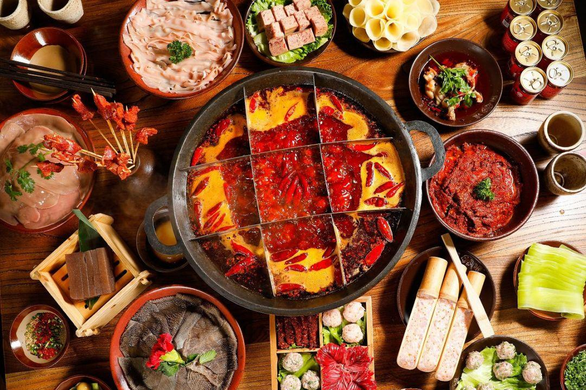

熊猫故乡
大熊猫繁育研究基地
1987 年建成，全球知名的大熊猫保护科研机构。在这里能看到幼年熊猫攀树、吃竹、打闹的萌态，是成都最热门的打卡地之一。
CHENGDU · SICHUAN
雪山下的公园城市，烟火里的幸福生活。三千年来城名未改、城址未迁，大熊猫的故乡，世界美食之都，一座把日子过成诗的慢城市。
成都地处四川盆地西部、成都平原腹地，是四川省省会、成渝地区双城经济圈核心城市，也是中国西部重要的经济、文化、交通与科技创新中心。
“九天开出一成都，万户千门入画图。”李白笔下的成都，自古便是物阜民丰的天府之国；杜甫寓居于此，写下“晓看红湿处，花重锦官城”。
这座城市以“慢”闻名：茶馆里的龙门阵、公园里的盖碗茶、火锅桌上的热闹，与高新区的写字楼灯火并存。2024 年末常住人口 2147.4 万人，正以公园城市理念重塑人与自然的边界——累计建成绿道约 9000 公里，全年空气质量优良天数 306 天，“开窗见雪山”是市民日常。
它也是面向世界的窗口：双流、天府两大国际机场 2024 年旅客吞吐量合计 8733.6 万人次，国际班列通达境外 118 个城市，外贸进出口总额 8390.0 亿元。
五代时遍植芙蓉花，故称“蓉城”；三国蜀汉设锦官管理蜀锦生产，“锦官城”由此得名。
自公元前 311 年张仪筑城以来，城名未改、城址未移，是中国城址延续最久的历史文化名城之一。
2018 年“公园城市”理念首次提出，成都作为首提地率先探索，让城市在公园里生长。
2010 年联合国教科文组织授予成都“世界美食之都”称号，川菜与小吃从这里走向世界。
从古蜀文明到世界都市，成都的历史是一条从未断流的文脉。
商周时期金沙遗址出土的“太阳神鸟”金饰，如今已成为中国文化遗产标志。古蜀先民在这里创造了灿烂的青铜与黄金文明。
秦并巴蜀后，张仪主持筑成都城。《太平寰宇记》载“一年成邑，二年成都”，成都由此得名，2300 余年来城址一直延续至今。
刘备在成都建立蜀汉政权，武侯祠的香火延续至今，三国文化成为成都最鲜明的历史标签之一。
北宋时期，成都民间商号发行“交子”，后由官府设立益州交子务正式发行，是世界上最早的纸币。
联合国教科文组织授予成都“美食之都”称号，成都成为亚洲首个获此殊荣的城市。
成都迈入超大城市行列，是成渝地区双城经济圈的核心引擎，正加快建设践行新发展理念的公园城市示范区。
成都的每一处地标，都藏着一份独特的城市记忆。
1987 年建成，全球知名的大熊猫保护科研机构。在这里能看到幼年熊猫攀树、吃竹、打闹的萌态，是成都最热门的打卡地之一。
清代古街区，由宽巷子、窄巷子、井巷子组成。青砖灰瓦的川西民居院落里，茶馆、川剧、蜀锦与创意小店共生。
约公元前 256 年李冰父子主持修建的无坝引水工程，两千多年来持续灌溉成都平原，2000 年列入世界文化遗产名录。
始创于 1923 年的老茶馆，竹椅、盖碗茶、掏耳朵，一碗茶从早喝到晚，是成都“慢生活”最生动的注脚。
全国唯一君臣合祀祠庙，诸葛亮与刘备的香火千年不绝；一墙之隔的锦里古街，灯火、戏台与小吃构成了热闹的蜀汉风情。
诗圣杜甫流寓成都时的故居，《茅屋为秋风所破歌》《春夜喜雨》都诞生于此。红墙竹影间，仍能触摸大唐的诗意。
百年商业街与开放式街区交织，IFS“爬墙熊猫”是城市地标。新旧潮流在这里同框，是观察成都时尚面孔的最佳窗口。
“窗含西岭千秋雪，门泊东吴万里船。”杜甫诗句里的雪山如今仍是成都的日常风景，冬季滑雪、四季观景，距市区仅约 100 公里。
川菜的灵魂是“一菜一格，百菜百味”。成都的餐桌，是麻辣鲜香的交响曲，也是市井烟火的日常。

牛油锅底翻滚着花椒与辣椒，毛肚“七上八下”，黄喉、鸭肠、脑花各得其所。一顿火锅吃三小时，是成都朋友聚会的标配仪式。据统计，2024 年成都餐饮收入达 1355.2 亿元。
舌尖上的成都竹签串起百样食材，一把签子数钱结账，热气腾腾的市井美味。
芽菜肉臊浇头，红油麻酱裹着筋道面条，一碗不过瘾。
皮薄馅嫩的成都馄饨，红油与清汤两种吃法各有拥趸。
牛肉牛杂切片拌红油卤汁，麻辣鲜香，川菜凉菜之王。
藤椒油与辣椒油双拼的冷串串，乐山风味在成都遍地开花。
小铜锅烘出的软糯蛋饼，夹肉松、奶油或榨菜，甜咸皆宜。
粗圆面条配甜辣酱汁，蒜香与红糖味在口中碰撞。
糯米团敲响铜盘“咚咚咚”，裹黄豆面淋红糖，锦里的名角。
以下数据均来自成都市统计局《2024 年成都市国民经济和社会发展统计公报》；历年 GDP 为第五次全国经济普查修订口径。
五年间经济总量跨过 6 个千亿级台阶，2024 年按不变价格增长 5.7%。
2024 年地区生产总值 23511.3 亿元，比上年增长 5.7%。
产业结构 2.3 : 28.7 : 69.0，第三产业贡献了七成经济增量。
第一产业 540.1 亿元、第二产业 6752.9 亿元、第三产业 16218.3 亿元。
数据来源：成都市人民政府 · 2024 年成都市国民经济和社会发展统计公报；历年 GDP 修订口径参考中经数据（豆包官方合作数据库）。
城市可以很拼，生活也可以很慢——这是成都教给世界的平衡之道。
“安逸”是成都人的最高赞美。公园里晒太阳、茶馆里摆龙门阵、麻将桌上消磨下午——把日子过成享受，是这座城市的底层代码。
“巴适”指舒服妥帖。一碗面、一场雨后的雪山、一顿热闹的火锅，成都人擅长从寻常事物里找到最熨帖的满足感。
市井烟火气是成都最迷人的部分：菜市场的叫卖、深夜的串串香、街角的手艺人。2024 年末成都拥有博物馆 201 座、三甲医院 55 家，烟火与文明并存。
“明月几时有，把酒问青天。”——苏轼《水调歌头》
词作者苏轼为蜀地眉山人，眉山地处成都都市圈。页面背景音乐选用蔡琴演唱版本，愿你在这座城市也找到属于自己的月光。